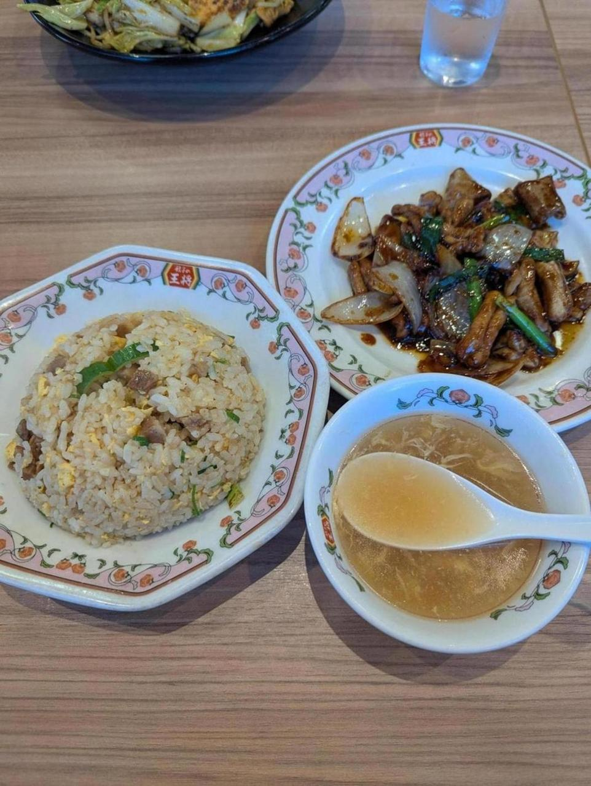

<- 日記

餃子の王将。 餃子の王将が好きで、2週に1回くらい行ってる。餃子の王将はご飯となんかのおかずで800円くらいなのに味がうまい。駅近とかのいい感じの場所にあまりないせいで地味だがかなりの実力者だろう。
特に写真にもある「ホルモンの味噌炒め」が一番好きで、ほぼこればかり食べてる。これは王将のポスターとかにもなぜか乗ってない（唐揚げとか麻婆豆腐が乗ってる）のだが、過小評価されてると思う。マジでうまいから。
あと王将を食べるとアイス食べたくなるよね。